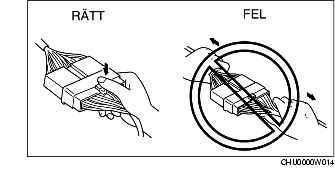
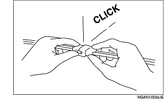
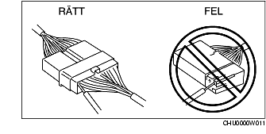

ELSYSTEM
B3E000000006201
Kontakter
Losskoppling av kontakter
-
• Håll i själva kontakten då du drar isär den. Dra aldrig i kabeln.

-
• Tryck på eller dra i spärren och dra sedan isär kontakten. Se bilderna nedan.

Ihopsättning av kontakter
-
• Skjut ihop kontakten och lyssna efter klicket då kontaktens båda delar fäster.

Kontrollpunkt
-
• När du använder mätinstrument för att kontrollera att strömkretsen är hel eller för att mäta spänningen, ska mätspetsen stickas in från kabelstamsidan.

-
• Stiften i vattentäta kontakter kontrolleras från kontaktsidan eftersom de inte går att komma åt från kabelstamsidan.
-
Försiktigt
-
• För att förhindra skador på kontakten, linda en tunn ledare runt mätspetsen i stället för att sticka in hela spetsen i kontakten.